结论：今天就是「市场运行很差」的一天，池内 11 只全部无买点，仓位与频率都要压到最低。 上证 -0.87%、创业板指 -4.37%、 科创综指 -5.41%（老师给的四个跌幅逐一对上）， 4344 家下跌、跌停 60 家，两市缩量到 14,845 亿 （-10.3%）——缩量杀跌，不是放量出清。 上证最低 3586.57 创新低、距 60 日低 3574.27 只剩 0.34%，3750 差 4.1% 没摸到。 纪律照抄：总仓上限 4 成、轻仓、降频、不追涨；瑞芯微跌到 208 下方、奥普特触到 140 下沿， 只是条件到位，不是买点。
老师给的四个跌幅全部对上（上证 -0.87%、创业板 -4.37%、科创综指 -5.41%、中证500 -2.6%）。方向上， 向下条件已触发：上证最低 3586.57，破 11/13 低 3623.84 与 11/12 低 3647.44，距 60 日低 3574.27 只剩 0.34%； 创业板指最低 2308.90 恰好是 60 日新低。向上仍是空谈——3750 一根都没摸到（差 4.1%）， 「突破后回抽确认三买」无从谈起。老师口径的「15 分钟弱势下跌中枢震荡、性质没变」与「创新低出底背驰低点」 今天同时成立；但「倾向直接大幅下破的概率较小」这句偏乐观：今天恰恰是继续下破，且量能同步萎缩 （14,845 亿，-10.3%），属于缩量阴跌而非放量砸出底部。
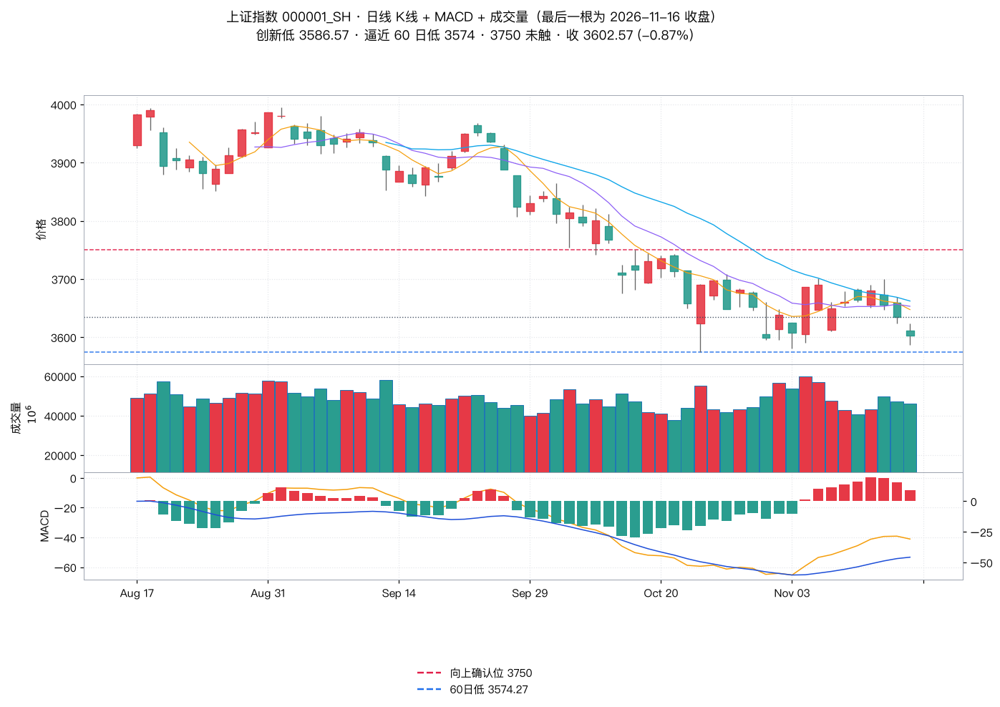
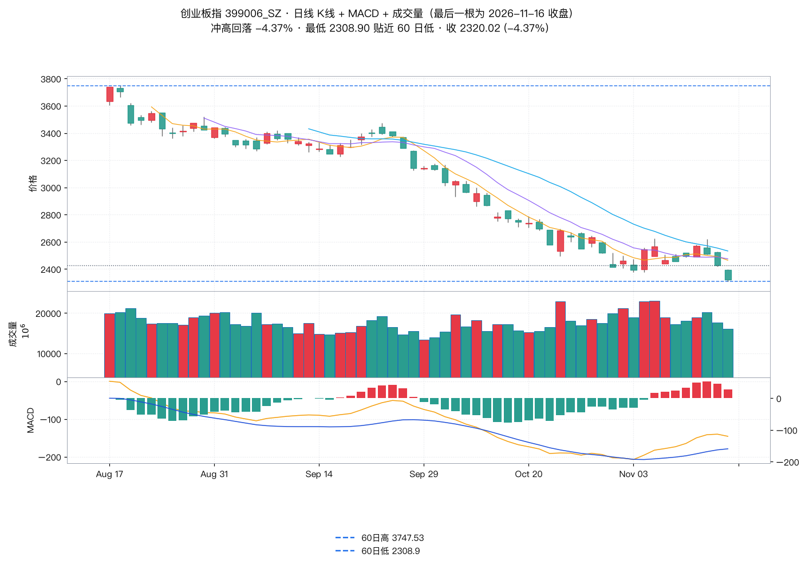
| 方向（自建篮子） | 老师口径 | 实测（均值 · 家数 · 代表股） |
|---|---|---|
| 算力/CPO | 老师：科技方向受英伟达业绩会扰动 | -10.92%，0 涨 5 跌；中际旭创 -12.28%、胜宏 -11.54%、沪电 -10.00%、工业富联 -9.68% |
| 半导体 | 老师：端侧/存储同步走弱 | -5.53%，0 涨 6 跌；兆易 -9.27%、寒武纪 -8.27%、海光 -6.54%、中芯 -3.67% |
| AI视频/传媒 | 老师：二类热点（传媒） | -4.69%，0 涨 7 跌；上海电影 -8.57%、昆仑万维 -5.58%、光线 -5.50%、中文在线 -5.23% |
| 人形机器人 | 老师：今日下热点榜，先观察能否止跌 | -3.75%，0 涨 9 跌；模塑 -8.55%、绿的谐波 -5.87%、长盈 -5.93%、三花 -3.56% |
| 玄学链·东方系 | 老师：补跌风险还没有结束 | -4.68%，1 涨 6 跌；大东方 -10.06%、日出东方 -10.00%、东方环宇 -9.98%、东方海洋 -9.96%（羊字辈：三羊马 -6.15%、水羊 -2.08%） |
| 防守（银行/家电/公路/保险/白酒/煤炭） | 老师：与市场节奏相反的防守方向 | 全部红盘：家电 +1.98%、公路铁路 +2.16%、银行 +1.80%、电力 +1.77%、保险 +1.31%、煤炭石油 +1.06%、白酒 +0.87% |
| 证券 | 老师：有异动，但结构不行 | +0.37%，6 涨 0 跌；国证证券指数 682.29 (+0.40%)，逆势翻红但没突破压力 |
三件要记的：① 老师「涨幅榜靠前主要是防守」成立——新浪行业榜前六：开发区 +2.91%、公路桥梁 +2.00%、 金融 +1.19%、家电 +1.18%、酿酒 +1.05%、煤炭 +0.54%；② 跌停 60 家集中在 通用设备 5、汽车零部 4、元件 4、光伏设备 4，杀跌主力是机器人与科技权重，不是指数权重； ③ 涨停仅 32 家且极散（一般零售 3、电池 3、游戏 2…），没有主线。 防守只当参照物，不要追红盘。
| 标的 / 题材 | 收盘 | 老师定性（老师口径） | 关键位 | 实测印证（日线触达） | 动作 |
|---|---|---|---|---|---|
| 药明康德 | 144.41 -1.29% | 等突破前高 157.8 出 15 分钟底分型三买 | 157.8 | 最高 146.72，差 11.08 未触；低 142.43 | 等 |
| 中国船舶 | 34.14 +0.09% | 月线扎实、等翻过压力做类二买共振 | — | 收 34.14（+0.09%），池内最抗跌，但低 33.55 未止跌 | 等 |
| 瑞芯微 | 208.60 -4.22% | 激进：回调到 208 附近出止跌信号 + 日线有力度底分型过第三根 K 线高点 | 208 | 最低 206.89，已跌破 208（差 1.11），收 208.60；底分型未出 | 等 |
| 伊利股份 | 32.20 +1.45% | 结构延续创新高，不追涨 | 30.46 | 最高 32.21 创 60 日新高，收 32.20（+1.45%），池内唯一红盘 | 不追 |
| 中文在线 | 26.28 -5.23% | 等突破压力高点 30.38 出底分型三买 | 30.38 | 最高 27.84，差 2.54；低 25.56 回到 11/09 低点 25.65 附近 | 等 |
| 海天瑞声 | 106.15 -6.89% | 对称震荡有破位迹象，观察能否收复修复 | — | 低 104.60（-6.89%）继续破位，未收复 | 等 |
| 奥普特 | 141.96 -4.72% | 激进等回调到中枢下沿止跌；稳健等突破 186.8 出日线底分型三买 | 140 | 最低 140.20 触及 140 下沿（差 0.20），收 141.96；底分型未出 | 等 |
| 柯力传感 | 52.52 -3.12% | 等中枢共振或突破高点压力后出三买 | 53 | 低 51.10，已跌破 53 支撑 1.90 元，收 52.52 | 等 |
| 兆易创新 | 223.22 -9.27% | 继续创新低，无法判断底背驰，等日线有力度底分型 | 237.28 | 盘中触及跌停 221.42，收 223.22（-9.27%），深跌破 11/09 前低 15.86 元 | 等 |
| 模塑科技 | 15.19 -8.55% | 顶分型今日出现，回调到 14.95 附近但还没止跌 | 14.95 | 低 15.06，距 14.95 仅 0.11 元（14.95 恰是今日跌停价），收 15.19 | 等 |
| 长盈精密 | 26.66 -5.93% | 等回调到左边低点支撑做中枢震荡止跌 | 32.08 | 低 26.43，距 32.08 门槛 3.82 元，未止跌 | 等 |
最接近触发的两个：瑞芯微最低 206.89 已跌破 208、奥普特最低 140.20 触到中枢下沿 140， 但第二条件「日线有力度底分型」都没出——条件到位 ≠ 买点；兆易盘中触跌停、模塑距 14.95 差 0.11 元， 都是「还没止跌」。老师给的潜在强势案例只给筛选逻辑不给标的，不推荐直接买入，仍要等方法买点。
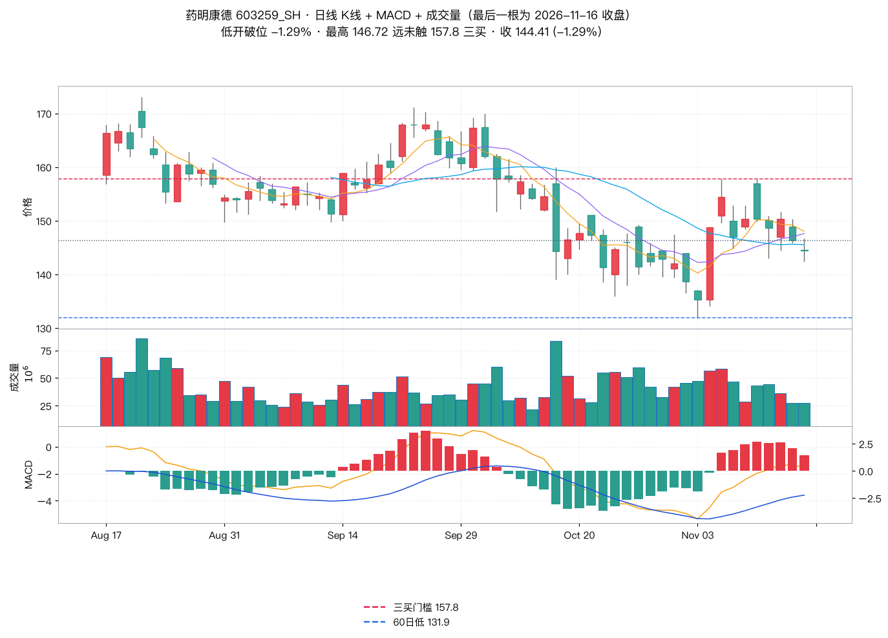
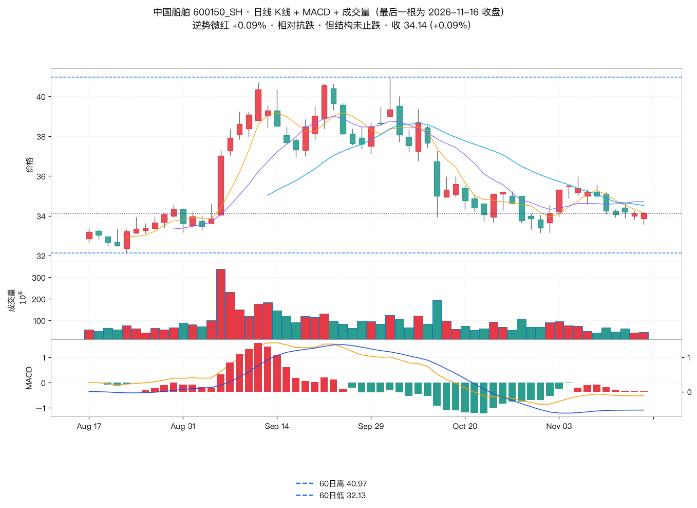
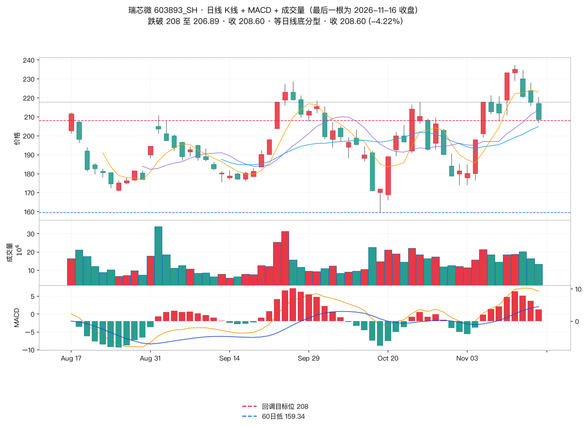
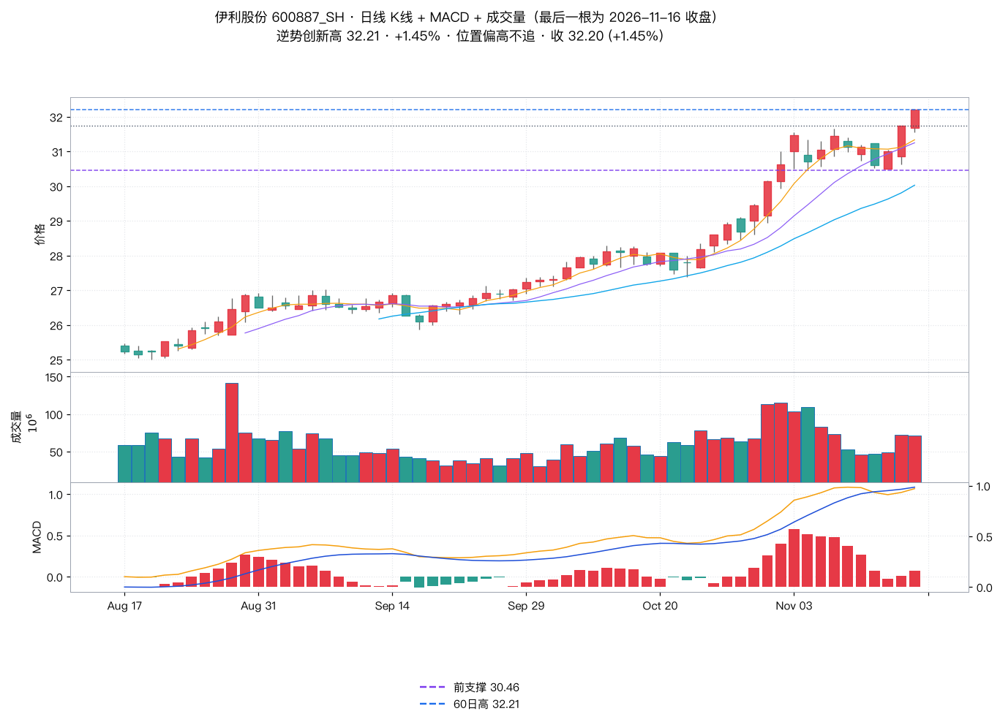
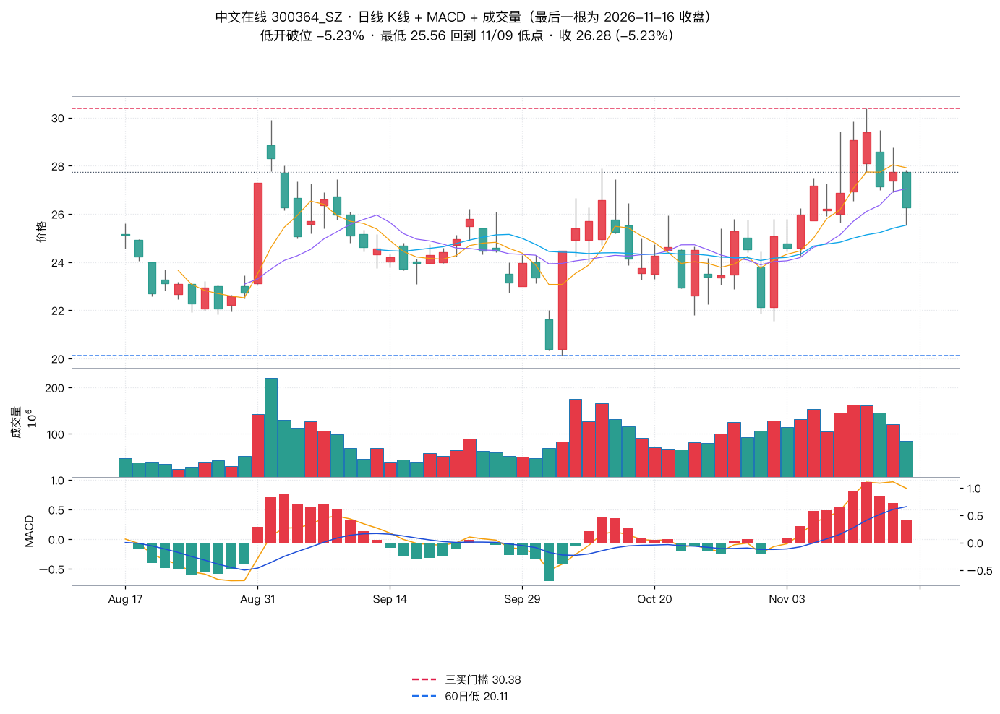
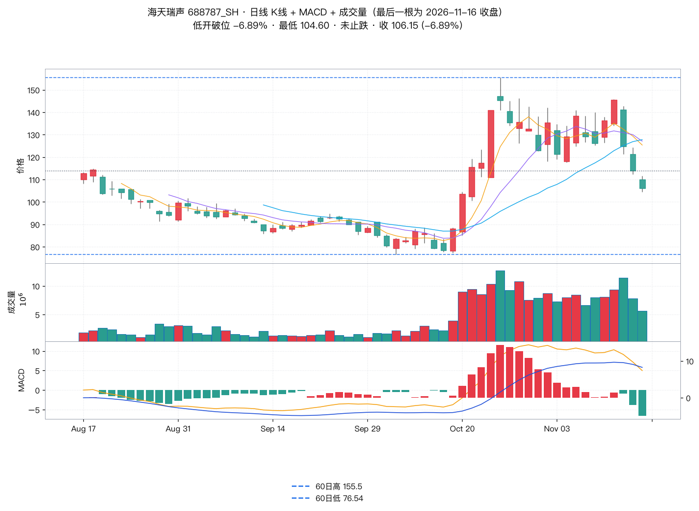
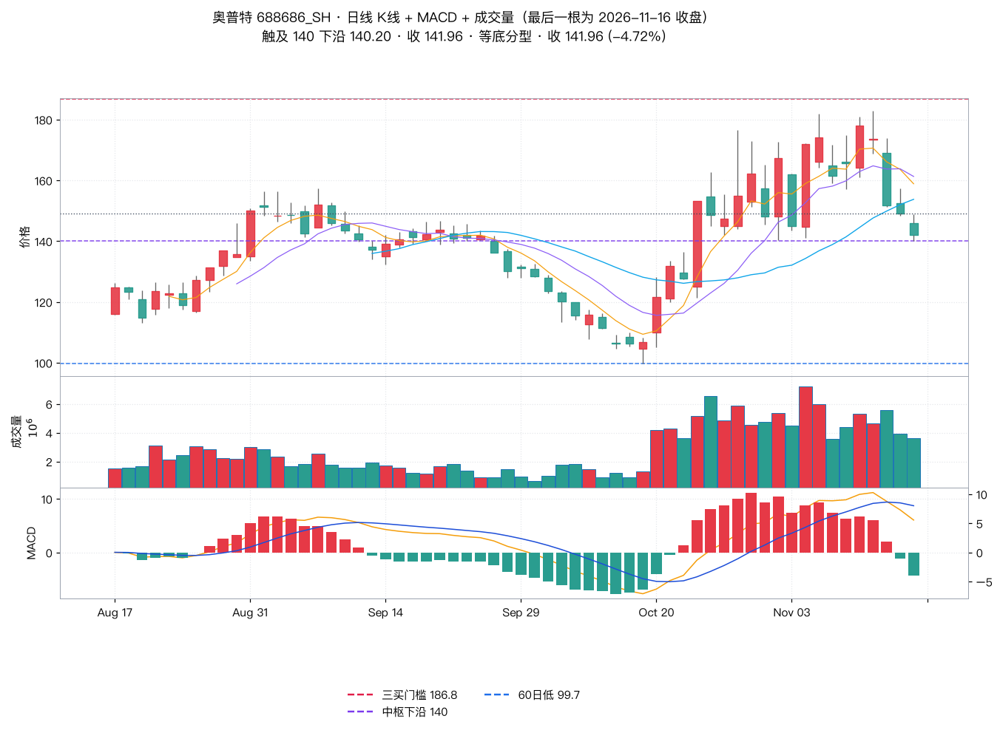
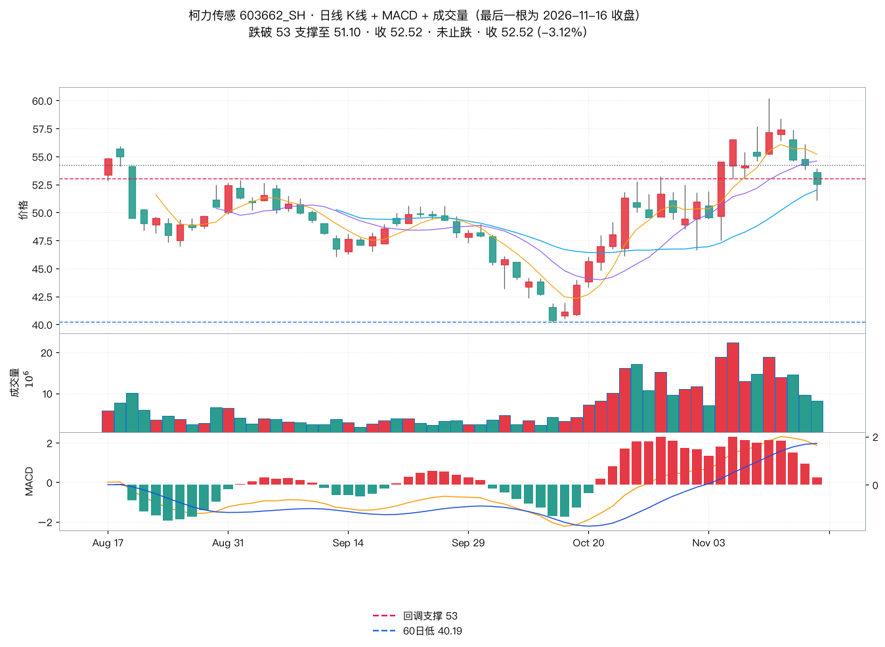
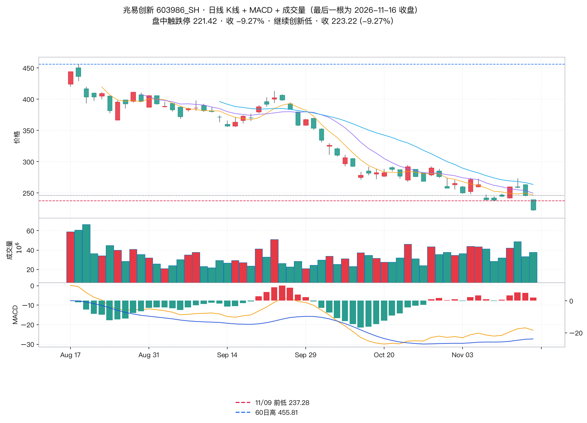
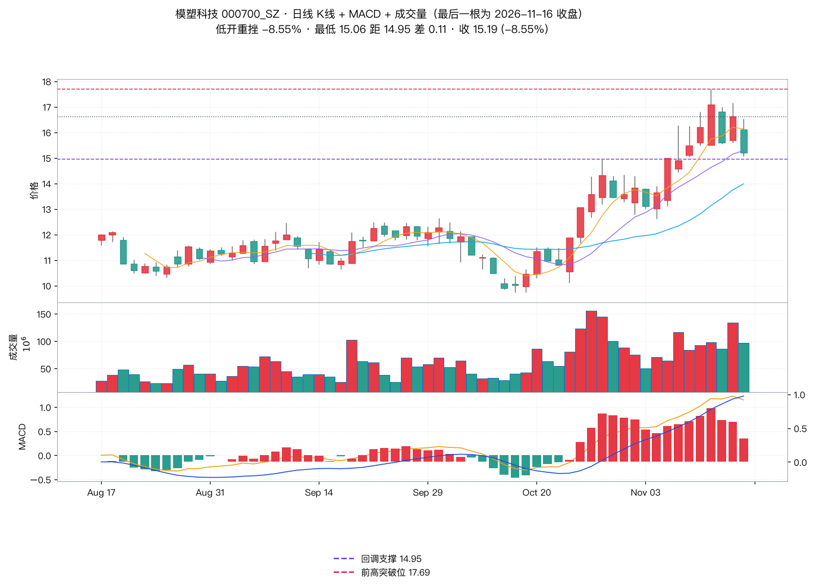
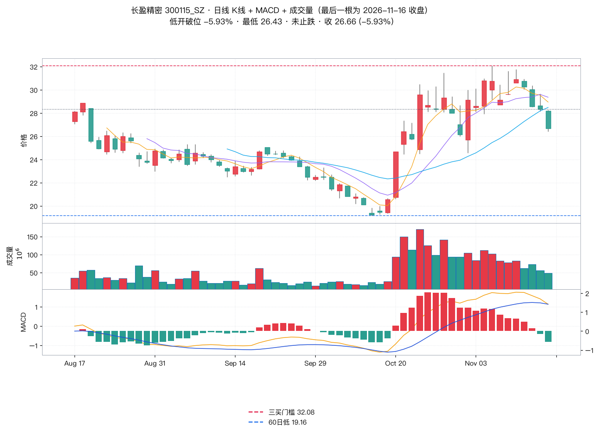
| 老师原文 | 实测 | 判定 |
|---|---|---|
| 「倾向走势直接大幅下破的概率较小」 | 上证最低 3586.57 破 11/13 低 3623.84、距 60 日低 3574.27 只剩 0.34%；创业板指最低 2308.90 恰是 60 日新低 | 偏乐观 |
| 「人形机器人板块内部走势分化」 | 篮子均值 -3.75%，0 涨 9 跌，是普跌不是分化 | 实为普跌 |
| 「二类热点：传媒」 | 传媒篮子 -4.69%、0 涨 7 跌，上海电影 -8.57%、中文在线 -5.23% | 标签与当日强度不符 |
| 「证券上方压力 1380 点附近无法突破消化」 | 本机唯一可核口径（国证证券指数 399975）收 682.29，量纲不同 | 无法核验 |
来源：都业华《高级班》2026-11-16 收评，执业编号 A0400626100004。仅供参考，不作为买卖依据，据此操作风险自担。投资有风险，入市需谨慎！
口径：同花顺日线 140 根（今日那根用收盘快照补齐）+ 新浪收盘快照；两市成交额＝沪市上证指数额＋深市深证成指额（同花顺口径，与新浪逐分一致）；全 A 涨跌家数取新浪 5578 只收盘；涨停/跌停用东财池；板块为自建篮子均值。缠论定性按老师口径引用，不声称我方复算过 15 分钟结构。